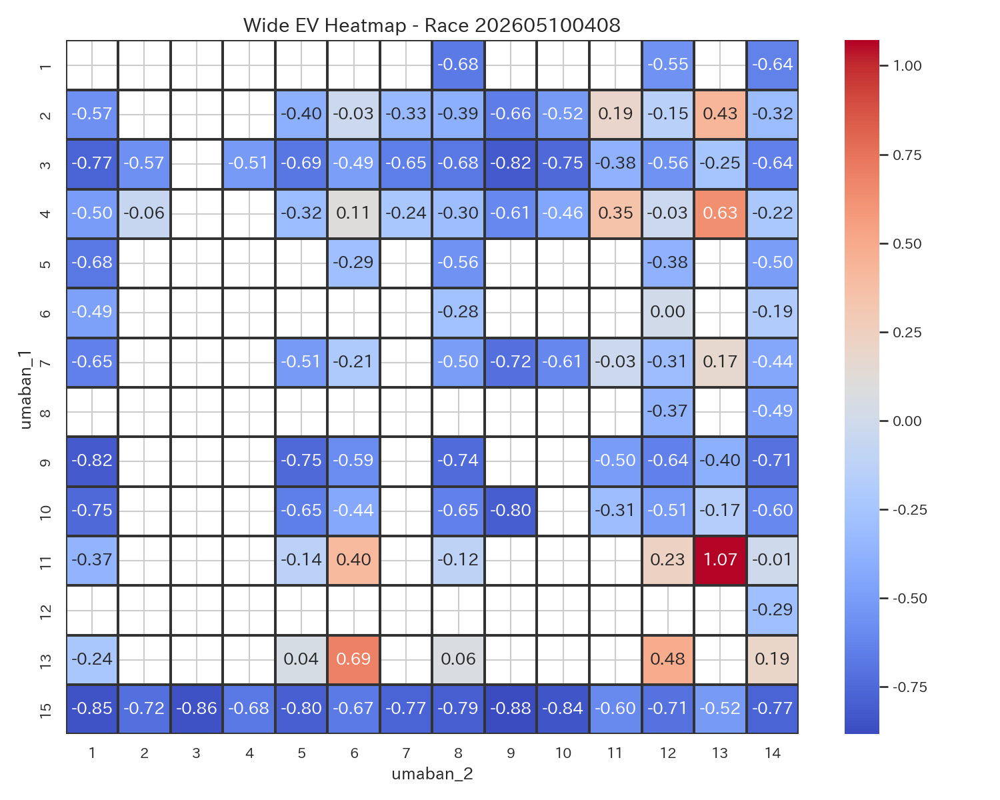
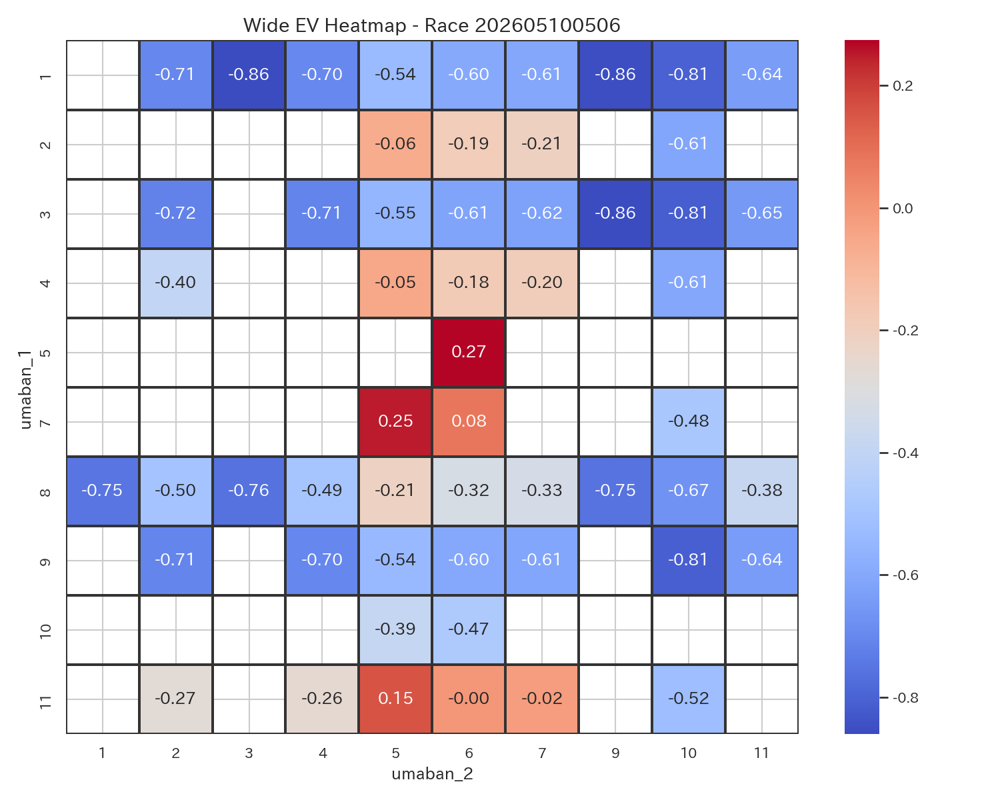
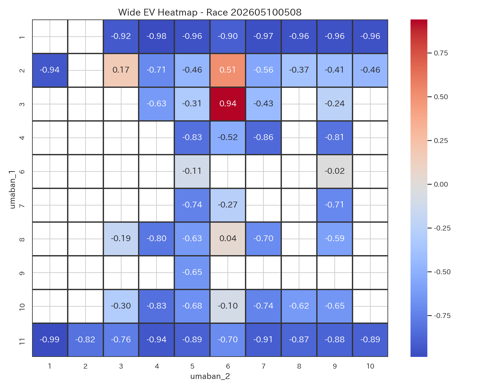
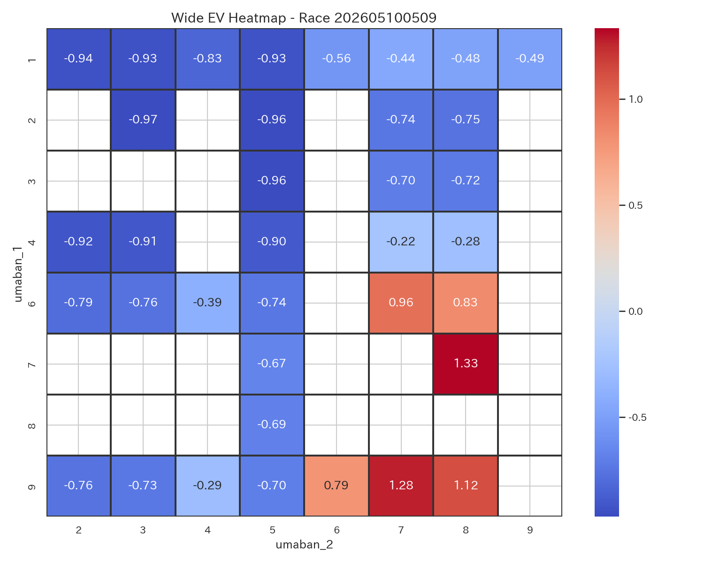
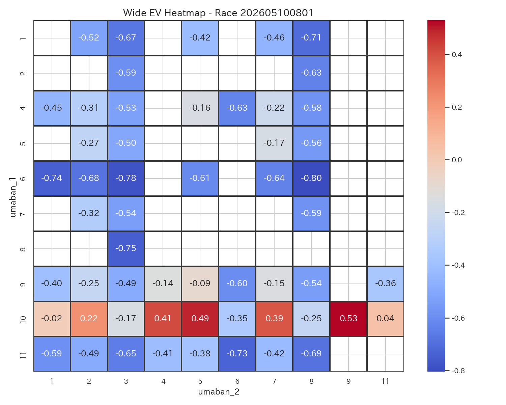
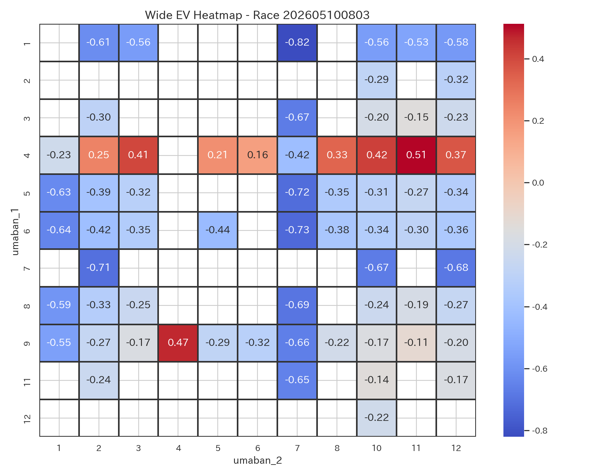
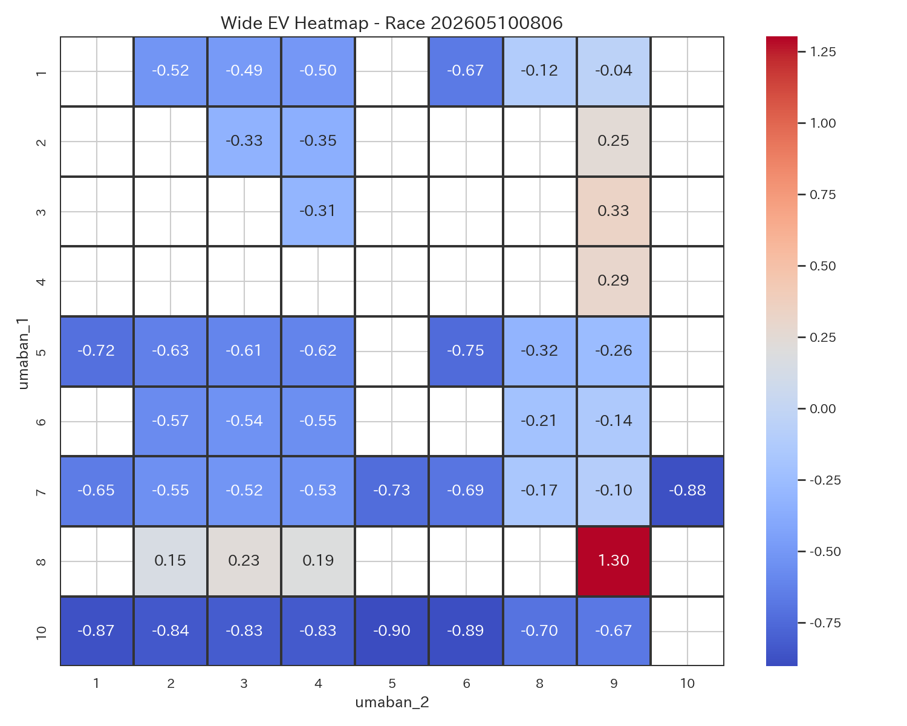
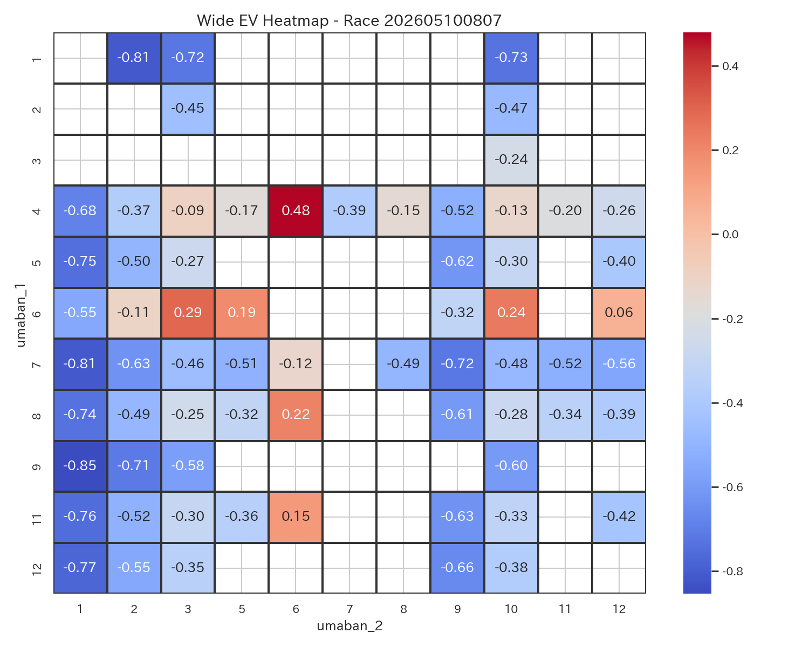
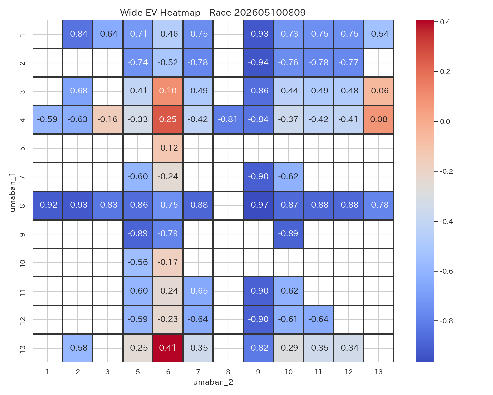
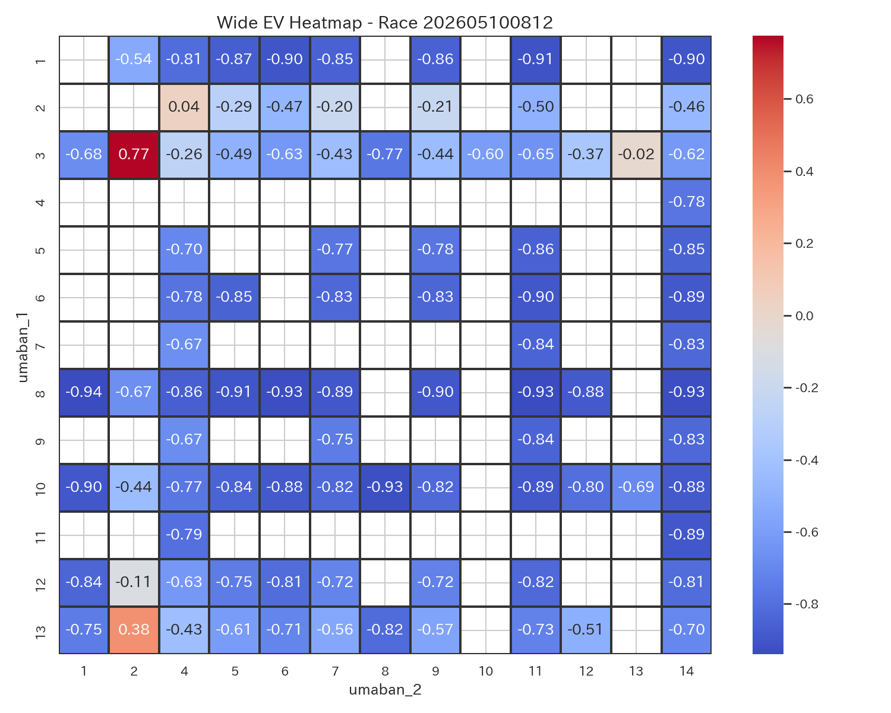

Daily Race Report
全レース EV ヒートマップ

レース別ワイド EV ヒートマップ
新潟8R

東京6R

東京8R

東京9R

京都1R

京都3R

京都6R

京都7R

京都9R

京都12R

勝負レース一覧
| race_label_ui | race_score | difficulty_score | comment |
|---|---|---|---|
| 東京9R | 0.767389 | 0.350000 | 勝負度が非常に高いレースです。 堅い決着が見込まれるレースです。 本命は 7-8。 EV=1.33, p_hit=0.466 とバランスが良好です。 次点候補は 9-7。 EV=1.28。 適度なリスクで、標準的な賭け方が適しています。 |
| 京都6R | 0.737703 | 0.308480 | 勝負度が高めのレースです。 堅い決着が見込まれるレースです。 本命は 8-9。 EV=1.30, p_hit=0.460 とバランスが良好です。 次点候補は 3-9。 EV=0.33。 適度なリスクで、標準的な賭け方が適しています。 |
| 新潟8R | 0.731740 | 0.458513 | 勝負度が高めのレースです。 比較的堅めの決着が期待できます。 本命は 11-13。 EV=1.07, p_hit=0.414 とバランスが良好です。 次点候補は 13-6。 EV=0.69。 適度なリスクで、標準的な賭け方が適しています。 |
| 京都3R | 0.644985 | 0.340784 | 勝負度が高めのレースです。 堅い決着が見込まれるレースです。 本命は 4-11。 EV=0.51, p_hit=0.302 とバランスが良好です。 次点候補は 9-4。 EV=0.47。 適度なリスクで、標準的な賭け方が適しています。 |
| 京都1R | 0.623513 | 0.309683 | 勝負度が高めのレースです。 堅い決着が見込まれるレースです。 本命は 10-9。 EV=0.53, p_hit=0.306 とバランスが良好です。 次点候補は 10-5。 EV=0.49。 適度なリスクで、標準的な賭け方が適しています。 |
| 東京8R | 0.622500 | 0.329433 | 勝負度が高めのレースです。 堅い決着が見込まれるレースです。 本命は 3-6。 EV=0.94, p_hit=0.388 とバランスが良好です。 次点候補は 2-6。 EV=0.51。 適度なリスクで、標準的な賭け方が適しています。 |
| 京都7R | 0.601278 | 0.333879 | 勝負度が高めのレースです。 堅い決着が見込まれるレースです。 本命は 4-6。 EV=0.48, p_hit=0.296 とバランスが良好です。 次点候補は 6-3。 EV=0.29。 適度なリスクで、標準的な賭け方が適しています。 |
| 京都12R | 0.572768 | 0.399249 | 勝負度が高めのレースです。 堅い決着が見込まれるレースです。 本命は 3-2。 EV=0.77, p_hit=0.355 とバランスが良好です。 次点候補は 13-2。 EV=0.38。 適度なリスクで、標準的な賭け方が適しています。 |
| 東京6R | 0.536412 | 0.301374 | やや勝負度があるレースです。 堅い決着が見込まれるレースです。 本命は 5-6。 EV=0.27, p_hit=0.255 とバランスが良好です。 次点候補は 7-5。 EV=0.25。 適度なリスクで、標準的な賭け方が適しています。 |
| 京都9R | 0.527297 | 0.368309 | やや勝負度があるレースです。 堅い決着が見込まれるレースです。 本命は 13-6。 EV=0.41, p_hit=0.281 とバランスが良好です。 次点候補は 4-6。 EV=0.25。 適度なリスクで、標準的な賭け方が適しています。 |
買い目一覧
| race_label_ui | bet_type | selection_ui | umaban_1 | umaban_2 | bet_score | ev | p_hit | odds |
|---|---|---|---|---|---|---|---|---|
| 東京9R | wide | 7-8 | 7 | 8 | 0.939685 | 1.332169 | 0.466434 | 5.0 |
| 東京9R | wide | 9-7 | 9 | 7 | 0.923055 | 1.276763 | 0.455353 | 5.0 |
| 東京8R | wide | 3-6 | 3 | 6 | 0.792662 | 0.938884 | 0.387777 | 5.0 |
| 東京8R | wide | 2-6 | 2 | 6 | 0.663482 | 0.508499 | 0.301700 | 5.0 |
| 東京6R | wide | 5-6 | 5 | 6 | 0.575748 | 0.273559 | 0.254712 | 5.0 |
| 東京6R | wide | 7-5 | 7 | 5 | 0.568673 | 0.249989 | 0.249998 | 5.0 |
| 新潟8R | wide | 11-13 | 11 | 13 | 0.854233 | 1.071226 | 0.414245 | 5.0 |
| 新潟8R | wide | 13-6 | 13 | 6 | 0.740749 | 0.693135 | 0.338627 | 5.0 |
| 京都9R | wide | 13-6 | 13 | 6 | 0.614033 | 0.407185 | 0.281437 | 5.0 |
| 京都9R | wide | 4-6 | 4 | 6 | 0.568173 | 0.254396 | 0.250879 | 5.0 |
| 京都7R | wide | 4-6 | 4 | 6 | 0.650478 | 0.479315 | 0.295863 | 5.0 |
| 京都7R | wide | 6-3 | 6 | 3 | 0.594784 | 0.293758 | 0.258752 | 5.0 |
| 京都6R | wide | 8-9 | 8 | 9 | 0.924830 | 1.302460 | 0.460492 | 5.0 |
| 京都6R | wide | 3-9 | 3 | 9 | 0.633873 | 0.333087 | 0.266617 | 5.0 |
| 京都3R | wide | 4-11 | 4 | 11 | 0.669146 | 0.512384 | 0.302477 | 5.0 |
| 京都3R | wide | 9-4 | 9 | 4 | 0.655892 | 0.468226 | 0.293645 | 5.0 |
| 京都1R | wide | 10-9 | 10 | 9 | 0.669689 | 0.528502 | 0.305700 | 5.0 |
| 京都1R | wide | 10-5 | 10 | 5 | 0.657718 | 0.488620 | 0.297724 | 5.0 |
| 京都12R | wide | 3-2 | 3 | 2 | 0.733285 | 0.774195 | 0.354839 | 5.0 |
| 京都12R | wide | 13-2 | 13 | 2 | 0.616091 | 0.383745 | 0.276749 | 5.0 |
レース別コメント
東京9R
勝負度が非常に高いレースです。 堅い決着が見込まれるレースです。 本命は 7-8。 EV=1.33, p_hit=0.466 とバランスが良好です。 次点候補は 9-7。 EV=1.28。 適度なリスクで、標準的な賭け方が適しています。
京都6R
勝負度が高めのレースです。 堅い決着が見込まれるレースです。 本命は 8-9。 EV=1.30, p_hit=0.460 とバランスが良好です。 次点候補は 3-9。 EV=0.33。 適度なリスクで、標準的な賭け方が適しています。
新潟8R
勝負度が高めのレースです。 比較的堅めの決着が期待できます。 本命は 11-13。 EV=1.07, p_hit=0.414 とバランスが良好です。 次点候補は 13-6。 EV=0.69。 適度なリスクで、標準的な賭け方が適しています。
京都3R
勝負度が高めのレースです。 堅い決着が見込まれるレースです。 本命は 4-11。 EV=0.51, p_hit=0.302 とバランスが良好です。 次点候補は 9-4。 EV=0.47。 適度なリスクで、標準的な賭け方が適しています。
京都1R
勝負度が高めのレースです。 堅い決着が見込まれるレースです。 本命は 10-9。 EV=0.53, p_hit=0.306 とバランスが良好です。 次点候補は 10-5。 EV=0.49。 適度なリスクで、標準的な賭け方が適しています。
東京8R
勝負度が高めのレースです。 堅い決着が見込まれるレースです。 本命は 3-6。 EV=0.94, p_hit=0.388 とバランスが良好です。 次点候補は 2-6。 EV=0.51。 適度なリスクで、標準的な賭け方が適しています。
京都7R
勝負度が高めのレースです。 堅い決着が見込まれるレースです。 本命は 4-6。 EV=0.48, p_hit=0.296 とバランスが良好です。 次点候補は 6-3。 EV=0.29。 適度なリスクで、標準的な賭け方が適しています。
京都12R
勝負度が高めのレースです。 堅い決着が見込まれるレースです。 本命は 3-2。 EV=0.77, p_hit=0.355 とバランスが良好です。 次点候補は 13-2。 EV=0.38。 適度なリスクで、標準的な賭け方が適しています。
東京6R
やや勝負度があるレースです。 堅い決着が見込まれるレースです。 本命は 5-6。 EV=0.27, p_hit=0.255 とバランスが良好です。 次点候補は 7-5。 EV=0.25。 適度なリスクで、標準的な賭け方が適しています。
京都9R
やや勝負度があるレースです。 堅い決着が見込まれるレースです。 本命は 13-6。 EV=0.41, p_hit=0.281 とバランスが良好です。 次点候補は 4-6。 EV=0.25。 適度なリスクで、標準的な賭け方が適しています。